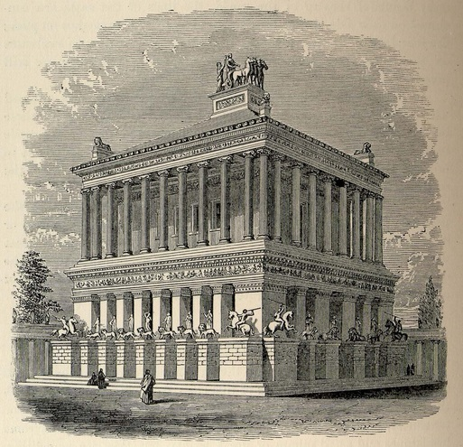
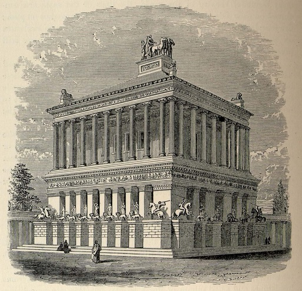

Majoritatea încercărilor de reconstituire a Mausoleului ni-l prezintă ca pe un edificiu pătrat, înalt de cca. 50 metri, susținut de coloane și având un acoperâmant în formă de piramidă, în vârful caruia o cvadrigă (car triumfal tras de patru cai) îi purta pe Mausol și Artemisa. Printre constructori găsim arhitecți și sculptori vestiti ai vremii - Timotheos, Leochares, Bryaxis, precum și Scopas; acesta din urmă a lucrat, după cum am vazut, și la împodobirea Artemisionului, iar Mausoleul a fost una dintre realizările sale - se pare că a murit (în vârstă de 70 de ani) în 350 î.e.n., care este și anul terminării monumentului din Halicarnas. Vitruviu nu exclude nici participarea lui Praxiteles (în locul lui Timotheos) - numarul constructorilor menținându-se constatnt la patru, căci inițiaseră un soi de întrecere pentru împodobirea fiecăreia dintre cele patru fațade ale monumentului.
 



Mausoleul a supraviețuit câteva veacuri (în ciuda ocupării succesive a
Halicarnasului de către persi, macedoneni, romani, turci ș.a.), până la
sosirea cavalerilor ordinului Sfântului Ioan
(ioaniți);
aceștia vor sta aici din 1309 până în 1522, când Soliman Magnificul,
dupa un asediu de șase luni, cucerește insula, în ciuda rezistenței dârze
organizate de marele maestru al ordinului, Villiers de l'Isle Adam
(un strămos al scriitorului cu același nume, din secolul XIX).